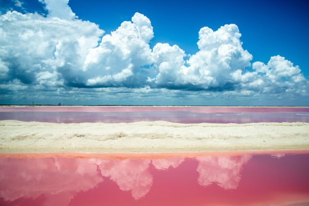
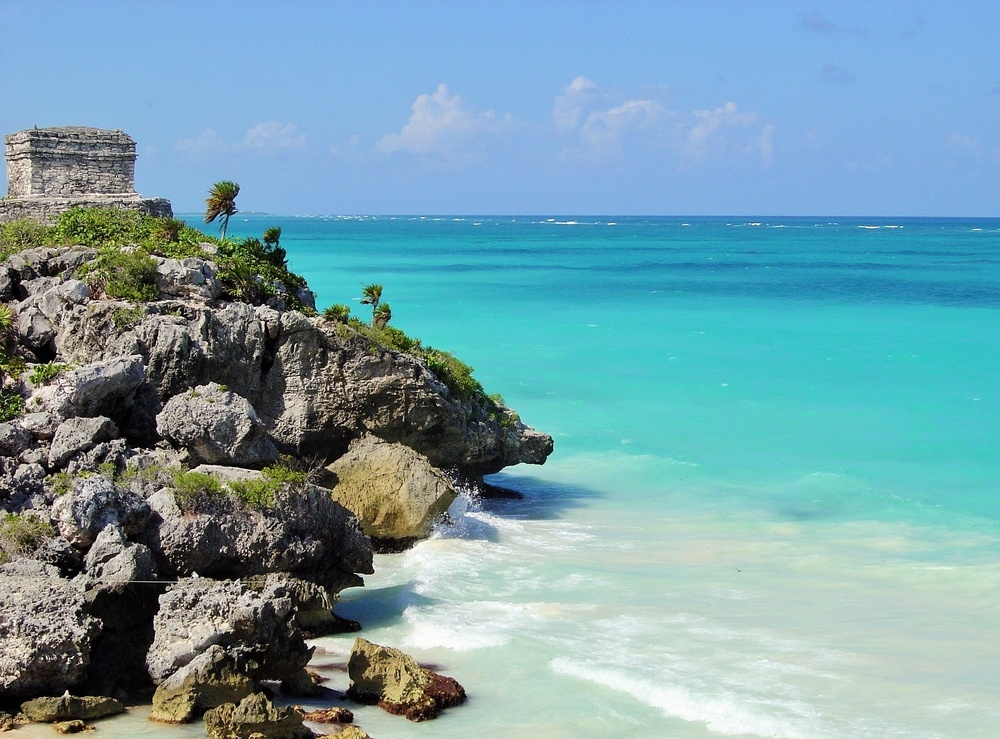
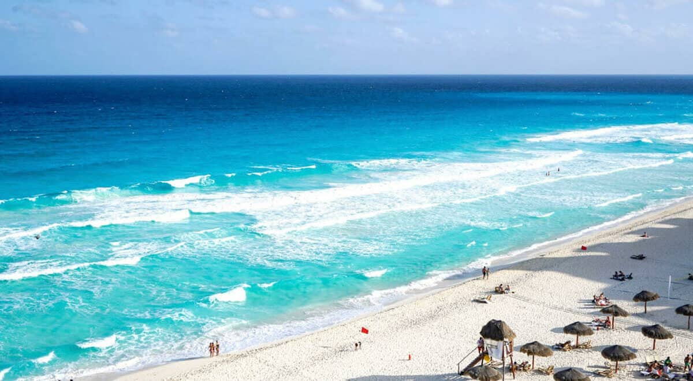

Playa Rosa, Yucatán
Una de las playas únicas que debes visitar en México es la Playa Rosa, en el Yucatán. Su nombre se debe al hecho de que el agua se tiñe de color rosa. El paisaje es indescriptible, al igual que las sensaciones que transmite. Imagínate disfrutar de una puesta de sol en este entorno mágico. El plancton rojo y un crustáceo muy especial de agua salada (artemia) son los responsables de este color tan especial. Este paisaje mágico es el resultado de su unión y de los residuos químicos.
Playa Ruinas, Tulum
Tulum es la playa mexicana por excelencia, un hilo conductor de belleza, sol y actividades. Empieza recreándote la vista entre arena blanca, aguas maravillosas y las ruinas mayas de la playa. El arrecife de coral de Tulum es el segundo más grande del mundo y merece un baño con gafas y tubo. Espérate mucho bullicio, muchos turistas y muchos hoteles. En Playa Ruinas podemos encontrar en la arena blanca algunas ruinas mayas en buen estado de conservación. Lo más importante aquí es el respeto al medio ambiente, el turismo pasa a un segundo plano, motivo por el cual no encontramos grandes edificios.
Playa Delfines, Cancún
Cancún cuenta con 22 km de playas de arena blanca, pero cada una tiene su propia personalidad. Puedes encontrar de todo: descanso, paisajes impresionantes, una gastronomía deliciosa e incluso ambiente nocturno. Si necesitas un poco de descanso, Playa Delfines es el lugar ideal. Ubicada a pocos kilómetros de Cancún, esta playa es el lugar imprescindible para pasear. Tendrás que «desconectar» un poco. No hay chiringuitos, muy pocas hamacas y sombrillas, no hay música ni vendedores ambulantes: es la playa ideal para quienes necesitan tranquilidad y no quieren que les molesten.